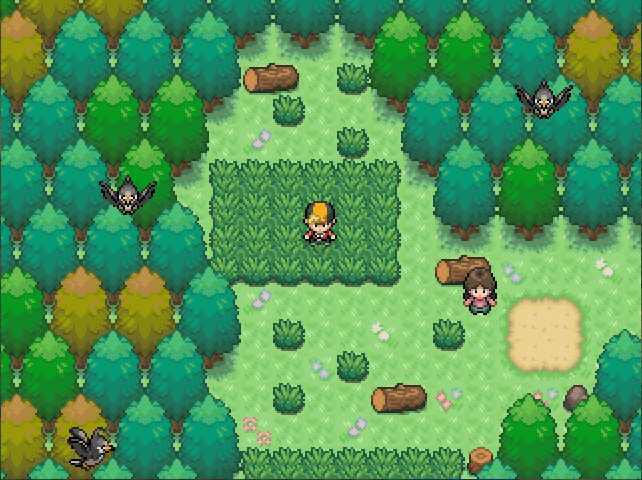

Pokémon Antique est un fangame français créé en 2020 sous PSP 0.7+.
Il reprend les codes des jeux officiels de la licence en y ajoutant une histoire plus sérieuse et basé sur les évévements historiques de notre monde.
Synopsis
Préface
Dans la région d'Egas, il y a environ 5000 ans, Aegyptius peuple du désert, Skathin peuple des glaces, Etlas peuple des mers, Géllines peuple des terres,
vivaient tous en harmonie avec leurs croyances et leurs religions. Au fil des années de prospérité, un homme du nom de Khaos ayant regroupé de nombreux partisans à sa cause parvint
à briser cette paix. Cet homme, Khaos possèdaient un très grand pouvoir, celui de contrôler quelconque Pokémon existant sur Egas. Les 4 peuples finissent par se réunir et scellèrent à tout
jamais Khaos. Cette histoire est racontée de générations en générations aux descendants des peuples résidant Egas.
Introduction
Il y a près de 30 ans, un homme inconnu parvint à retrouver la tombe de Khaos. Ce dernier a récuperé l'intégralité de la force de Khaos. Jusqu'à ce jour, personne ne connait qui est
l'homme ayant libérer la force de Khaos. La région d'Egas est gouverné par une étrange association appellé Coop. Nostro.
Leur chef est encore aujourd'hui inconnu. Le second de l'organisation est un certain Umyn, prêt à tout pour son chef et embellir son image devant la région.
Umyn, second de la Coopérative Nostro Athéna, Générale de l'armée Héra, Générale de la MasrGrup
Départ à l'aventure
Vous avez 18 ans et êtes originaire de Bourg-Joie, village où aucun Pokémon ne résident.
Le professeur Ganok est un vieil ami de votre famille et est le seule personne à possèder des Pokémon. Les fossiles découverts lorsque vous étiez plus jeunes
sont réanimés. Il vous propose donc de partir découvrir où est parti son fils disparu depuis 10 ans désormais.
Professeur Ganok
Voyagez
Egas est une région remplie de mystères et de lieux mystiques. Découvrez les plus beaux clichés de la région :

Route 3
Forêt Naïtu
Abilène
Affrontez
Les meilleurs dresseurs de la région vous attendent et sont prêt à combattre. Traversez la région pour les rencontrer.
Nathan, Maître du Temple de la Foudre - Karl, Champion d'Abilène - Luna, Ancienne Maître d'Egas